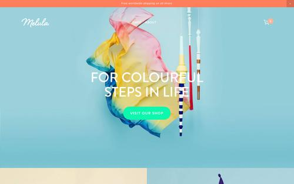

AVOX ARCHITECTS

Objetivo:
- Nesse projeto, foi elaborado um site para "Avox Architects", aonde o mesmo deveria conter seus servições que a empresa oferece, o portifólio para que seus clientes possam ver trabalhos antigos, uma aba para noticiar novidades da empresa, uma parte para contatar a empresa e pedir orçamentos.
Informações:
- Feito usando HTML5, CSS3, JS, MySQL Server e frameworks
- Possui todas as versões disponíveis no GitHub
- Site criado no dia 23/04/2024
- Recebe constantes updates até hoje
MELULA

Objetivo:
- Nesse projeto, foi elaborado um site para "Melula", o site teria como principal função um usario conseguir achar cores que tenham o melhor contraste ou compatibilidade possível para as cores que ele deseja utlizar, seja para confeccionar uma camisa, um site, uma logo ou qualquer tipo de coisas que ele deseja visualizar as melhores opções de cores para isso.
Informações:
- Feito usando HTML5, CSS3, JS, MySQL Server, frameworks e Inteligência Artificial(IA)
- Conta com uma IA que ajuda a propor contrastes de cores desejadas
- Possui todas as versões disponíveis no GitHub
- Site criado no dia 19/01/2025
- Recebe constantes updates até hoje